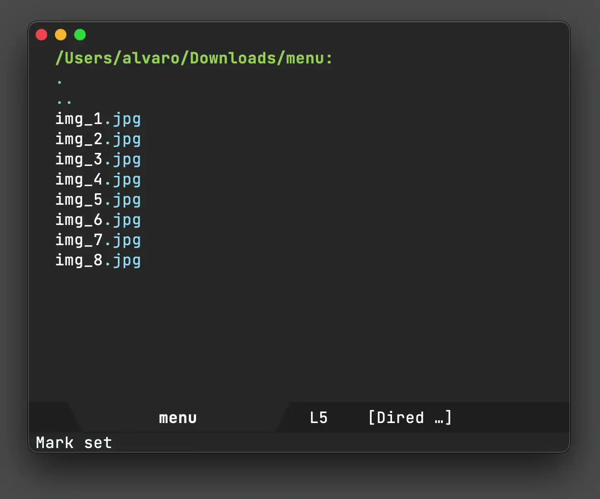
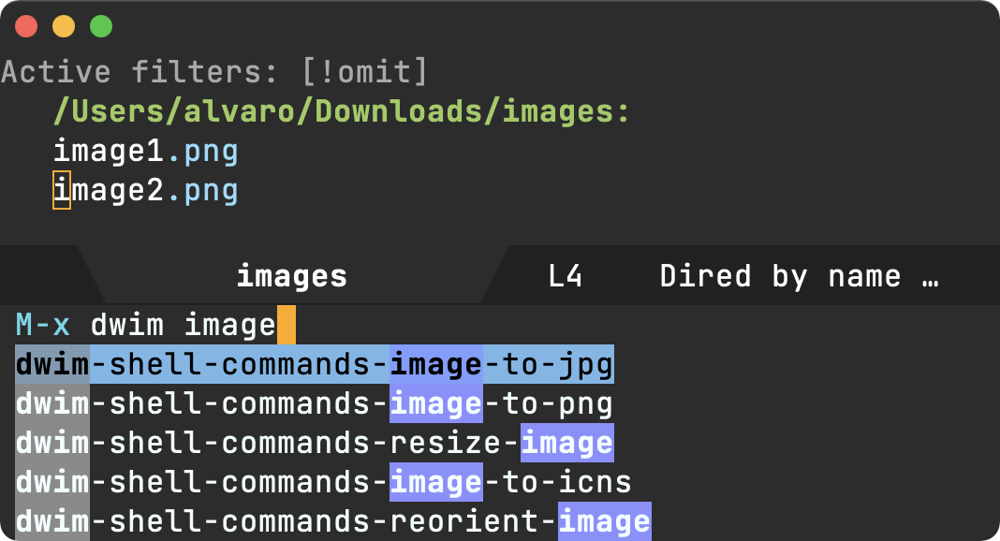

Álvaro Ramírez
Seamless command-line utils
Just the other day, I received a restaurant menu split into a handful of image files. I wanted to forward the menu to others but figured I should probably send it as a single file.
ImageMagick's convert command-line utility works great for this purpose. Feed it some images and it creates a pdf for you:
convert image1.png image2.png image3.png combined.pdf
Using convert for this purpose was pretty straightforward. I'm sure I'll use it again in a similar context, but what if I can make future usage more seamless? In the past, I would just make a note of usage and revisit when needed. Though this works well enough, it often requires some amount of manual work (looking things up, tweaking command, etc) if you happen to forget the command syntax.
I wanted common one-liners (or longer shell scripts) to be easily reusable and accessible from Emacs. Turns out, the dwim-shell-command experiment is working fairly well for this purpose. In addition to providing template expansion, it generally tries to do what I mean (focus when needed, reveal new files, rename buffers, etc).
Here's how I saved the convert command instance for future usage:
(defun dwim-shell-commands-join-as-pdf () "Join all marked images as a single pdf." (interactive) (dwim-shell-command-on-marked-files "Join as pdf" "convert -verbose '<<*>>' '<<joined.pdf(u)>>'" :utils "convert"))
From now on, any time I'd like to join multiple files into a pdf, I can now select them all and invoke dwim-shell-commands-join-as-pdf.

In the saved command, '<<*>>' expands to either dired selected files or whatever file happens to be open in the current buffer. The buffer file isn't of much help for joining multiple items, but can be handy for other instances (say I want to convert current image to jpeg).
Moving on to '<<joined.pdf(u)>>', we could have just written as joined.pdf, but wrapping it ensures the resulting file name is unique. That is, if joined.pdf already exists, write joined(1).pdf instead.
These kinds of command-line integrations are working well for me. Take the webp animation above, it was created by invoking dwim-shell-commands-video-to-webp on a .mov file. Easy peasy. While I can easily memorize the convert command for the pdf instance, I'm hopeless in the webp scenario:
ffmpeg -i '<<f>>' -vcodec libwebp -filter:v fps=fps=10 -compression_level 3 -lossless 1 -loop 0 -preset default -an -vsync 0 '<<fne>>'.webp
While searching through command line history helps to quickly re-spin previous commands, it requires remembering the actual utility used for any particular action. On the other hand, wrapping with Emacs functions enables me to remember the action itself, using more memorable names. Also, fuzzy searching works a treat.

It's been roughly a month since I started playing around with this idea of wrapping command-line utilities more seamlessly. Since then, I've brought in a bunch of use-cases that are now quickly accessible (all in dwim-shell-commands.el):
- dwim-shell-commands-audio-to-mp3
- dwim-shell-commands-clipboard-to-qr
- dwim-shell-commands-copy-to-desktop
- dwim-shell-commands-copy-to-downloads
- dwim-shell-commands-docx-to-pdf
- dwim-shell-commands-download-clipboard-stream-url
- dwim-shell-commands-drop-video-audio
- dwim-shell-commands-epub-to-org
- dwim-shell-commands-external-ip
- dwim-shell-commands-files-combined-size
- dwim-shell-commands-git-clone-clipboard-url
- dwim-shell-commands-git-clone-clipboard-url-to-downloads
- dwim-shell-commands-http-serve-dir
- dwim-shell-commands-image-browse-location
- dwim-shell-commands-image-exif-metadata
- dwim-shell-commands-image-reverse-geocode-location
- dwim-shell-commands-image-to-grayscale
- dwim-shell-commands-image-to-icns
- dwim-shell-commands-image-to-jpg
- dwim-shell-commands-image-to-png
- dwim-shell-commands-install-iphone-device-ipa
- dwim-shell-commands-join-as-pdf
- dwim-shell-commands-kill-gpg-agent
- dwim-shell-commands-kill-process
- dwim-shell-commands-macos-bin-plist-to-xml
- dwim-shell-commands-macos-caffeinate
- dwim-shell-commands-macos-hardware-overview
- dwim-shell-commands-macos-open-with
- dwim-shell-commands-macos-reveal-in-finder
- dwim-shell-commands-macos-set-default-app
- dwim-shell-commands-macos-share
- dwim-shell-commands-macos-toggle-dark-mode
- dwim-shell-commands-macos-toggle-display-rotation
- dwim-shell-commands-make-transparent-png
- dwim-shell-commands-move-to-desktop
- dwim-shell-commands-move-to-downloads
- dwim-shell-commands-open-clipboard-url
- dwim-shell-commands-open-externally
- dwim-shell-commands-pdf-password-protect
- dwim-shell-commands-pdf-to-txt
- dwim-shell-commands-ping-google
- dwim-shell-commands-rename-all
- dwim-shell-commands-reorient-image
- dwim-shell-commands-resize-gif
- dwim-shell-commands-resize-image
- dwim-shell-commands-resize-video
- dwim-shell-commands-speed-up-gif
- dwim-shell-commands-speed-up-video
- dwim-shell-commands-stream-clipboard-url
- dwim-shell-commands-svg-to-png
- dwim-shell-commands-unzip
- dwim-shell-commands-url-browse
- dwim-shell-commands-video-to-gif
- dwim-shell-commands-video-to-optimized-gif
- dwim-shell-commands-video-to-webp
What other use-cases would you consider? dwim-shell-command is available on melpa.
Update
2022-11-14 dwim-shell-commands.el list updated.